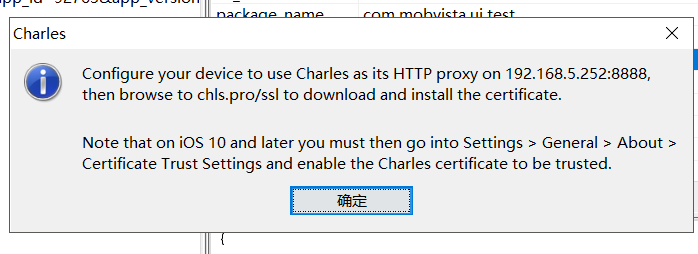

1、安装charles，点击帮助——ssl代理——在移动设备或远程浏览器上安装charles root证书，看到如下界面：

2、在手机保证和电脑连接同一个wifi的前提下，开启手机代理，输入服务器地址：192.168.5.252，端口号为：8888，有时候新手机连接代理，charles会提示是否允许，点击allow，如果没提示需要在手机端安装证书后设置一下(设置方法：ios : 设置——通用——关于本机——证书信任设置——找到证书——开启信任开关)；
3、手机端安装charles证书，浏览器输入：chls.pro/ssl，打开根据提示安装证书，在手机通用——关于本机——证书信任设置——打开后找到刚刚安装的证书，选择打开；
4、电脑端也需要安装证书，在charles软件中点帮助——ssl代理——安装charles root证书，根据提示一步一步安装证书；
6、此时就可以在手机端访问app了，charles会显示每个访问请求的接口。
数据劫持：
方法一：本地映射
手机点击app页面，可以看到charles请求接口，选择charles左侧请求列表中最内层的接口，打开查看返回的数据，已经得到请求的数据，右键——本地映射，打开后已默认填好端口协议主机号，我们把查询（即参数）删除，也可以选择填入需要的参数，参数格式:*参数a=111*，映射到本地路径——选择——选择本地mock.json文件位置，保存。则这时再次请求的时候，可以看到已经直接返回了我们的mock数据。
【映射这里可能会遇到的坑：当改变mock数据之后，再次请求可能返回的不是最新改变的，需要在本地映射中先选择别的映射文件，再选回来原来的文件，则可返回修改之后的mock数据】
方法二：rewrite
配置rewrite重写，适用于直接将线上offer劫持，进行错误复现和调试。
工具——重写——启用重写——添加——起名称——添加重写规则——类型选择正文——往哪里选择响应——
匹配值：比如：“url”
全部替换："值:
也可以把线上的url放入另一个自定义字段中，进行统一替换，比如替换值："url:"新url","url_old:"
【注意】
有时候charles都配置好了，但是抓到的接口数据都是unknow,在charles——代理——访问控制设置（Access control settings）——添加0.0.0.0/0，就可以了。